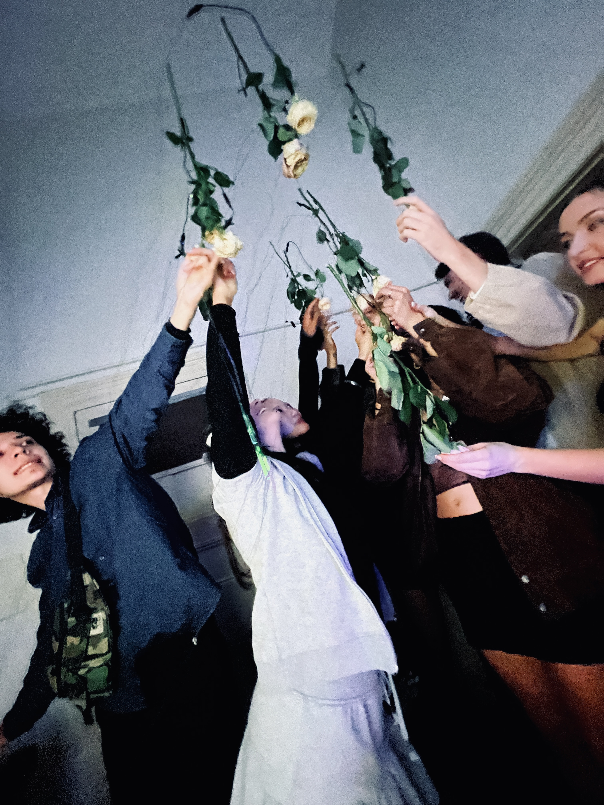

Can this be developed for a pop-up or exhibition?
Yes. The interaction, materials and media can be developed for the setting. Visitor flow, accessibility, reset behaviour and the venue’s technical conditions need to be agreed before production.
Commissioned work
Touch, objects and sensors become the inputs to a responsive environment. Minnie Park develops interactive audio-visual installations for exhibitions, brand pop-ups and cultural spaces, working between Seoul and Melbourne and collaborating internationally.

Meta Rose is Park’s ongoing artistic body of work, begun in 2024. Living roses act as tactile interfaces in distinct installations. The Meta Rose: Shared Resonance (2026) requires two or more participants to connect to activate sound, visuals and light. This practice informs the relationship between participation, material and response in commissioned work; a new commission is developed around its own context.
See Shared Resonance ↗Share the venue, dates, audience, desired interaction, available floor area, display and sound specifications, budget range and on-site production arrangements.
Following the initial brief, scope, deliverables, technical responsibilities, schedule and usage are agreed before production begins.
Yes. The interaction, materials and media can be developed for the setting. Visitor flow, accessibility, reset behaviour and the venue’s technical conditions need to be agreed before production.
These are separate scope decisions. The proposal identifies content and system development, hardware supply or rental, installation, travel and operational support as applicable. A fixed price is not listed because the production requirements differ.
Remote development and documented handover can be discussed with a local production team. On-site testing and support requirements depend on the system and venue.